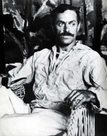
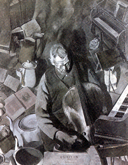
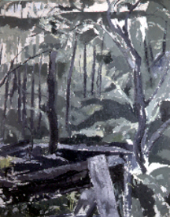
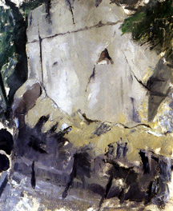

<HTML>
<HEAD>
<META HTTP-EQUIV=ÓContent-TypeÓ CONTENT=Ótext/html; charset=windows-1252Ó>
<META NAME=ÓGeneratorÓ CONTENT=ÓMicrosoft Word 97Ó>
<TITLE>Subjectivist Tendencies in Early Modernist American Art</TITLE>
</HEAD>
<BODY BGCOLOR="#DBDB70">
&nbsp;<A HREF="p4cont.html"></A>

<P>
<HR><TT><FONT COLOR="#101895"><FONT SIZE=+2>
Subjectivist Tendencies<BR>
in Early Modernist American Art:</FONT><BR>
<FONT COLOR="#101895"><FONT SIZE=+2> 
The Landscapes of Edwin Walter Dickinson</FONT></FONT></TT>

<P><TT><FONT COLOR="#101895"><FONT SIZE=+0>By Mary Ellen Abell</FONT></FONT></TT> <BR><BR>
<TABLE BORDER=0 WIDTH="500" >
<TR>
<TD>	
<BR>
Photograph of Edwin Dickinson, 1928<BR> 
<P>Labeled a “maverick”, “eccentric” and “a painter’s painter”, the early American modernist Edwin Walter Dickinson (1891-1978) has long been admired by many artists and scholars for the originality of his vision, but he has not been accorded the status given to many of his contemporaries. This is probably due in part to the fact that scholars have considered that Dickinson’s paintings do not easily fit into the main categories which are commonly applied to mainstream American art of the early modernist period. In all likelihood, another cause for the artist’s delay in receiving more recognition stems from his long-term residence in Provincetown, Massachusetts, where he lived, with a few disruptions, from 1913-1939, when he moved to the nearby town of Wellsleet.</P>

<BR>
“The Cello Player”, 1924-26, oil on canvas, 60" x 48 1/4", <BR>
Fine Arts Museum of San Francisco. <BR><BR>
Dickinson is best known for his large, figurative works such as <I>The Cello Player,</I> 1924-26 and <I>The Fossil Hunters,</I> 1926-28, both of which were painted in Provincetown. The artist's reputation grew slowly during the 1920s and 1930s period. The Fossil Hunters was exhibited in the Carnegie International (1928), and the National Academy of Design (1929). His first solo exhibition was held in 1927 at the Albright Art Gallery in Buffalo, but he had to wait nine years for his second single-artist show at the Georgette Passedoit Gallery, who became his first New York dealer. This gallery gave him annual shows until 1942. Dickinson’s career was given a boost when he began to winter in New York beginning in 1944. He was elected Associate of the National Academy of Design in 1948, and the National Institute of Arts and Letters elected him to membership in 1956. By the 1960s he was well known. The Museum of Modern Art organized a circulating exhibition of his work (1961-63), he was given a retrospective exhibition at the Whitney Museum of American Art (1965), and was invited to the 34th Biennale in Venice (1968). More recently, the National Academy  of Design hosted an exhibition of his work (1982) and the Babcock and Tibor de Nagy galleries in New York held two concurrent exhibitions of Dickinson’s work (1996), which were well received. Yet, todate, contemporary scholarship lags far behind Dickinson's reputation. A major reason for this is because Dickinson’s paintings do not easily fit into the main categories which are commonly applied to mainstream American art of the early modernist period. However, if one considers Dickinson’s work within the context of generational influences and inclinations particularly with regard to his landscapes, he can be linked with other artists of his time.</P>

In a 1983 dissertation by Mitchell Douglas Kahan, Dickinson’s work was situated in the context of subjectivist tendencies particular to some American artists working in the 1930s<A HREF="http://part-archive.finitude.org/part4/abnotes.html#1"><FONT SIZE=2>1</FONT></A>, but I would like to suggest that Dickinson’s art fits even more naturally into the period of the teens and 1920s in terms of its inward orientation and interest in landscape, characteristics which connect him with others of his generation, particularly some of the artists in the Stieglitz circle.</P>

<P>Early American modernists like Edwin Dickinson, Marsden Hartley, Arthur Dove, and Georgia O’Keeffe, were successors to a nineteenth-century American romanticism inherited from such artists as Cole, Bierstadt, Ryder and Blakelock and looked to nature for their inspiration.  These independent artists transformed landscape motifs with their own deeply personal vision which did not comply with the traditional artistic portrayals of their time.  They believed in the value of direct observation from nature and emphasized an American expression rooted in their immediate environment as can be seen, for instance, in Hartley’s and O’Keeffe’s bold landscapes of the American Southwest, Dove’s energetic waterscapes of Long Island Sound, and Dickinson’s moody Cape Cod seascapes.  In the late teens and early '20s, Dickinson, O’Keeffe, Joseph Stella and Dove all explored romantic, non-narrative, often symbolic styles, and all were closely attuned to the living vibrancy of nature.  One might say that these artists were joined not by a painting style, but by a mental attitude towards their work.  That is to say, that feeling and method were intimately linked in their varying expressions.</P>

<P>More recent scholarship has begun to reject notions of a mainstream and to acknowledge the idea of modernism as embracing a fairly wide variety of styles and expressions originating in different parts of the country.  Though the canon of American art history suggests that American landscape disappeared as a motif around 1918, in “provincial” places like Southern California and summer artist’s colonies the traditional pursuits of landscape and figure painting retained their primacy.  Recently, the importance of artists’ colonies for the development of some modernist art has been acknowledged.<A HREF="http://part-archive.finitude.org/part4/abnotes.html#2"><FONT SIZE=2>2</FONT></A>  Advanced painters like O’Keeffe, Dove, John Marin, and Dickinson preferred remoteness and solitude in order to think and immerse themselves in nature and, in some cases, chose to live in close proximity to “naive” cultures with strong traditional ties to the natural world.  Several of the artists– such as Hartley, Marin, and O’Keeffe– discovered the terrain of New Mexico and additional subject matter in the indigenous Indian culture.  Others– like Dickinson, Hartley, and Charles Demuth–went to Provincetown, a small fishing village located on the outer tip of Cape Cod that was largely peopled by Portuguese fishermen and their families, who still kept their cultural traditions and native language.</P>

<P>Another link between many of the artists of the Stieglitz circle and Dickinson, which might partially explain shared concerns, is the similarity of their artistic education.  Like many others of his generation, including Hartley, Marin, Alfred H. Maurer, O’Keeffe, Sheeler, and Stella, Dickinson was trained by William Merritt Chase, who had himself been instructed at the Royal Academy in Munich.  As William H. Gerdts has stated, during the period of Chase’s studies there, the modernist concept of “the primacy of method and technique over subject matter began to be stressed” at Munich’s Royal Academy over traditional approaches to art.<A HREF="http://part-archive.finitude.org/part4/abnotes.html#3"><FONT SIZE=2>3</FONT></A>  Adopting the <I>alla prima</I> technique favored by the Munich Realist Wilhelm Leibl, Chase considered painting a labor of love. He advised his students, “Play with your paint, be happy over it, sing at your work.”<A HREF="http://part-archive.finitude.org/part4/abnotes.html#4"><FONT SIZE=2>4</FONT></A> It was Chase’s philosophy that when an artist enjoyed painting this would be transmitted to the viewer.  Chase encouraged his students to cultivate their own individuality and learn to express their unique vision of the world.  “The value of a work of art depends simply and solely on the height of inspiration, on the greatness of soul, of the man who produced it,” he said.<A HREF="http://part-archive.finitude.org/part4/abnotes.html#5"><FONT SIZE=2>5</FONT></A>  He encouraged his students to experiment and to approach nature from new vantage points, offering prizes for the most imaginative compositions.  Chase’s stress on the technique of painting rather than subject matter, his insistence that the unique soul of the artist would be present in the completed work, and his belief in the central role of inspiration rather than method as the key to producing significant artworks might be seen to be common characteristics connecting Dickinson and others of his generation who studied with Chase and were a part of the Stieglitz circle.</P>

<P>Dickinson is best known for his large, figurative canvases, but actually the bulk of the artist’s <I>oeuvre</I> is composed of modestly-scaled landscapes.  Surprisingly, there has not been any in-depth examination of the over 200 <I>premier coup</I> (meaning “first strike” to indicate they were done in one sitting and not touched again) landscapes, which form the bulk of Dickinson’s documented paintings, which number over 500 canvases.  The one major show of these works was held at the Hirshhorn Museum and Sculpture Garden in 1980 with a modest catalogue.</P>
<P>After studies at the Art Students League and Pratt Institute, Edwin Dickinson came to Provincetown during the summer of 1912 in order to study with Charles W. Hawthorne, a former Chase student who had  established his Cape Cod School of Art in Provincetown in 1899.  Trained by Chase and Hawthorne in the technique of <I>premier coup,</I> Dickinson’s landscapes consist of little drawing or underpainting because the entire process lasts only three or four hours.  Dickinson’s <I>premier coup</I> landscapes, done on site, do not deviate from nature as radically as do paintings by artists of the Stieglitz group, yet his modernist sensibility allies him with these painters.  His use of color and his composition of forms places him squarely in the modernist camp.  Dickinson’s color seems to operate on three levels simultaneously. Firstly, his choice of hues appears to relate naturalistically to the perceived landscape.  Secondly, though this is so, his subtle colors harmonies are compositionally organized like an abstract painting and tend to be spatially flat to a far greater degree than the traditional painters of his time.  Thirdly, the artist’s color harmonies also seem to act together as metaphors for a particular state of mind or mood.  Most Dickinson landscapes cannot be described as picturesque or beautiful: they produce deeper emotions within the viewer which range from wistful to poignantly sad, not unlike the evocative works of Ryder.  Though based on things seen, Dickinson’s abstract transformation of his landscape motifs and complicated still life and figurative compositions several times resulted in their being hung sideways or upside down in exhibitions, and some have even been reproduced that way.  One can see how this might occur by inverting a Dickinson landscape, or even figurative work by the artist, and perceive that it holds up compositionally even when hung incorrectly–which reveals how close his work was to modern abstraction.</P>

<P>Dickinson was an energetic man who enjoyed the rugged outdoor life and thought nothing of walking many miles a day on the outer shore of Cape Cod along the Atlantic Ocean, not only in the daytime but even at night and during storms.  The artist painted his landscapes on site when the weather permitted it and was so attuned to weather conditions that he habitually noted them in a journal. This is not surprising considering that he loved the changing aspects of nature and painted by natural light, whether in his studio or on site. Also, like Arthur Dove, Dickinson was an avid sailor. His experience at sea in the navy for two years during World War I (1917-19) and his passion for sailing made him extremely sensitive to the direction of the wind and the quality of the atmosphere. One of the reasons for his attraction to Provincetown, was that it is surrounded on three sides by the sea.</P>

<P>Dickinson was always drawn to the beauty of the common object, be it a stick, piece of crockery or old boot.  He was also attracted to the abandoned or broken down, such as his subtle <I>Church Interior,</I> 1928, which represents a section of a wall in an old church prior to the demolition of the building.  At first this work appears as an abstraction, composed predominately of simplified rectangular forms, only closer inspection reveals faint details which allude to cracking paint and peeling plaster.</P>

<P>One striking aspect about Dickinson’s body of work is the artist’s curious objective mental attitude towards his motif as if he had no sense of its function in the material world.  Dickinson has recalled that he often experienced a detachment from the identity of his subject and could easily lose consciousness of what category of object he was painting–whether a still life, landscape or portrait–in his attempt to successfully resolve the plastic elements of line, color, space, and form.  “I very well recall,” he said, “as early as 1915 I had come to the point where I could so lose track of what was the object I was doing that...after an hour straight of concentration, I was surprised to look up and see that there was a person beyond the canvas.”<A HREF="http://part-archive.finitude.org/part4/abnotes.html#6"><FONT SIZE=2>6</FONT></A> This tendency might have come from the training he had with Chase, who reportedly used to suggest that his students try to conceive of their canvases as the reality and the motif as the painting.<A HREF="http://part-archive.finitude.org/part4/abnotes.html#7"><FONT SIZE=2>7</FONT></A>  Elaine de Kooning has written about Dickinson’s habit of squinting in order to “eliminate detail&quot; and to present his subjects “in terms of mobile, dissolving planes, always in precise reference to the actual scene”.<A HREF="http://part-archive.finitude.org/part4/abnotes.html#8"><FONT SIZE=2>8</FONT></A>  Dickinson believed that by not engaging his “anticipations” regarding the motif that he could more easily “get it right.”<A HREF="http://part-archive.finitude.org/part4/abnotes.html#9"><FONT SIZE=2>9</FONT></A>  Many of the representations of his subjects seem to lack substance and to be composed of a vaporous immateriality.  Paradoxically, along with this sense of a detachment, there is also a feeling of close familiarity and attachment to many of his subjects.  Of course, the artist carefully selected material that he knew well from the life and environment around him.  This intimate feeling is reinforced by the artist’s habit of getting up close to his motifs and sometimes rendering only a section of them.  He almost always strove to find unexpected angles and approaches to his subjects, and it is not unusual to view a Dickinson portrait, landscape, or nude for some moments before deciphering its identity.  All of which leads to the interesting observation that Dickinson’s works have a curious push and pull effect on the sensibilities of the viewer, being at once familiar and yet made surprisingly odd and unfamiliar by the artist. </P>

<BR>
“Towards Mrs. Driscolls”, 1928, oil on canvas<BR> 

<P>Some of Dickinson’s landscapes are of identifiable sites, such as <I>Cliffs, Long Nook</I>, 1927. Others, like <I>Toward Mrs. Driscoll’s,</I> 1928, which is his largest <I>premier coup</I> landscape and represents a backyard scene in Provincetown, are less recognizable.  However, if one studies the latter painting closely, one can make out a wooden fence in the foreground, the trunk and branches of a tree to the far left, as well as smaller trees in the middle and right background.  A photograph taken contemporaneously at the time that the painting was made shows the branches of the right tree and a group of stacked wooden wagon wheels, which are faintly visible in the center right of Dickinson’s canvas.  Dickinson always worked from specific motifs and strove to capture his site from a particular orientation point. In this work, as in others of the period, C&eacute;zanne’s influence can be discerned in the manner in which the hues making up the foreground are comparable in value and color to those defining the distant points and in his use of brushstrokes which are of a similar size and character no matter what object he was defining.  This results, as in works by C&eacute;zanne from his mature period, in a fusion of near and far and a consequent flattening of traditional space.  Much more abstract is a series of five paintings that Dickinson rendered of a cliff located near his father’s summer home in Sheldrake, New York.  If one compares two works from the series, <I>X-Cliff,</I> 1926 (fig. 5), and <I>X-Cliff, Great Night Rain,</I> 1926 (fig. 6), with a photograph of the site (fig. 7), certain characteristics such as the gouged-out, triangular shape on the side of the cliff can be distinguished in these extremely abstract-looking versions of the site.</P>

<BR>
"X-Cliff" 1926, oil on canvas, 24" x 19 1/2", Tibor de Nagy Gallery. <BR>

<P>Dickinson’s landscapes might be seen to be informed by the result of residing in a place remote from urban art centers and his art to be emblematic of an artist, turning inward and seeking meaning in his relationship to his art.  In Dickinson’s case this included art-making as a creatively fulfilling occupation.  In interviews conducted with the artist he spoke of his approach to his paintings and drawings as problem solving.  For instance, his drawing of the Van Cortlandt House, done in one sitting, was for “the exercise in observation of what happens to three equidistant dormer windows in angular perspective above the eye.&quot;<A HREF="http://part-archive.finitude.org/part4/abnotes.html#10"><FONT SIZE=2>10</FONT></A>  There is also evidence that Dickinson’s art offered him more than aesthetic satisfaction and might have been for him a process of therapeutic self-discovery.  Interestingly, the moody, poignant, eerie quality of many of Dickinson’s canvases seems to contradict accounts of the garrulous and humorous aspects of the artist’s personality much commented on by friends and family. Elaine de Kooning once wrote: “witty, erudite, opinionated, Dickinson sparkled in company.” <A HREF="http://part-archive.finitude.org/part4/abnotes.html#11"><FONT SIZE=2>11</FONT></A>However, Dickinson’s struggles with periodic bouts of depression for much of his life, a malady from which other members of his family have suffered,<A HREF="http://part-archive.finitude.org/part4/abnotes.html#12"><FONT SIZE=2>12</FONT></A> leads one to speculate about their possible effect on his art, though evidence from the artist's journals and interviews indicate that his art production was dormant during these attacks of melancholia. Dickinson seemed to be an indvidual who was so convinced of his own inner vision that he appeared uninfluenced by contemporary ideas going on around him. He created a mysterious dream world, but one based on directly observable phenomena which he dissolved until many of his landscapes appear to be composed of a vaporous immateriality. They seem to capture a reality that transcends normative vision to become a painting reality which has been filtered through the artist's aesthetic and temperament.</P>

<P>As we have seen, though Edwin Dickinson’s work does not fit into a mainstream modernist movement, his romantic response to landscape links him with certain members of the Stieglitz circle.  Edwin Dickinson and these members of the early American artistic vanguard stood as exemplars of individualism and as such were important influences on the later subjectively-inclined artists in the 1930s as well as the post-war abstract expressionists.  Dickinson’s <I>premier coup</I> landscapes have been seen as forerunners of the abstract canvases of members of the New York School, many of whom summered in Provincetown during the 1940s and 1950s.  In an essay for an exhibition catalogue of Dickinson’s work at the National Academy of Art in 1982, Elaine De Kooning mentioned the respect that Dickinson’s originality elicited from many Abstract Expressionist painters who acknowledged this by including him every year in their artist-juried exhibitions at the Stable Gallery in the early 1950s.</P>
</TD>
<TD><A HREF="p4cont.html#REVIEWS"></A></TD>
</TR>
</TABLE>
</B></BODY>
</HTML>
